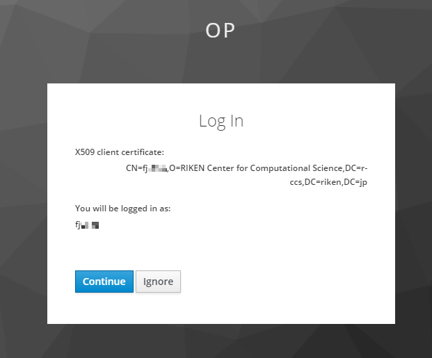
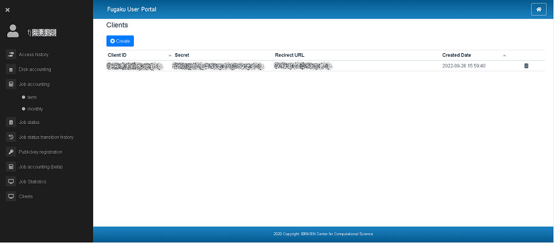

2. Authentication¶
2.1. OAuth 2.0 Authorization Code¶
To execute WebAPI, an OAuth 2.0 access token and the OpenID Connect protocol is required.
Please refer to here for creation/deletion of parameters (client_id, client_securet, redirect_uri) used for requests.
The outline of the authorization flow is as follows.

Fig. 2.1 Authorization flow outline¶
The steps involved in the authorization process are as follows.
Making an authorization request.
Set query parameters in the authorization endpoint URL to authenticate the user and get the authorization code used by the Web API.GET https://idp.fugaku.r-ccs.riken.jp/auth/realms/op/protocol/openid-connect/auth
Query parameters
Parameter
Type
Description
response_type
String
(Required)To get the authorization code, set to “code”.
scope
String
(Required)Specify the authority to request grant from the user.Be sure to include “openid”.
client_id
String
(Required)Client ID.
redirect_uri
String
(Required)Callback URL. URL to be redirected to after authentication/authorization.Must match the redirect URL registered with the client.
When accessing the authorization endpoint URL, the user selects a valid client certificate in the client certificate selection.

Fig. 2.2 Client certificate selection dialog¶
On the consent screen, confirm the login user and press the :guilabel: Continue button.
 Fig. 2.3 Consent screen¶
Generate an access token.
To generate an access token from the authorization code, set post parameters in token endpoint URL.POST https://idp.fugaku.r-ccs.riken.jp/auth/realms/op/protocol/openid-connect/token
Post parameters
Parameter
Type
Description
grant_type
String
(Required)To get the authorization code, set to “authorization_code”.
code
String
(Required)Authorization code.
client_id
String
(Required)Client ID.
client_secret
String
(Required)Client secret.
redirect_uri
String
(Required)Callback URL. URL to be redirected to after authentication/authorization.Must match the redirect URL registered with the client.
Responce parameteres (JSON)
Parameter
Type
Description
access_token
String
Access token.
expires_in
Number
Amount of time in seconds until the access token expires.
id_token
String
ID token. Represented by JSON Web Token (JWT).
refresh_expires_in
Number
Amount of time in seconds until the refresh token expires.
refresh_token
String
Refrsh token.
token_type
String
“bearer”(Fixed).
not-before-policy
Number
not-before policy.
session_state
String
session state。
scope
String
Permissions granted by the user.
- example:
{ "access_token":"eyJhbGciOiJSUzI1NilSInR5cCIgOiAlSldUIiwia2lkIiA6ICJ0Ni1NNzUwelgyZFV3N3AzVVBaTTBCcVVIMkNMYWl6S2hwazAtVWVuR3I4In0.eyJqdGkiOiIwMjkxZmI5YS1kYTRhLTRlMWMtOWFmZC1lYjk3YWQyNzY2NzEiLCJleHAiOjE2MDAwMjY0NzQsIm5iZiI6MCwiaWF0IjoxNjAwMDI2MTc0LCJpc3MiOiJodHRwczovL2lkcC5mdWdha3Uuci1jY3MucmlrZW4uanAvYXV0aC9yZWFsbXMvb3AiLCJhdWQiOiJhY2NvdW50Iiwic3ViIjoiZTdjNjJmOGUtOGEwYS00NjJiLTg3YTktZWZiMTRiNzAyZWRiIiwidHlwIjoiQmVhcmVyIiwiYXpwIjoicG9ydGFsIiwiYXV0aF90aW1lIjoxNjAwMDI2MDUwLCJzZXNzaW9uX3N0YXRlIjoiY2U5NmFiNjMtOTQ0Ni00ZjNmLWJlNjQtNDQyOWIxMDc1N2ZkIiwiYWNyIjoiMSlSInJlYWxtX2FjY2VzcyI6eyJyb2xlcyI6WyJvZmZsaW5lX2FjY2VzcylSInVtYV9hdXRob3JpemF0aW9uIl19LCJyZXNvdXJjZV9hY2Nlc3MiOnsiYWNjb3VudCI6eyJyb2xlcyI6WyJtYW5hZ2UtYWNjb3VudClSIm1hbmFnZS1hY2NvdW50LWxpbmtzIiwidmlldy1wcm9maWxlIl19fSwic2NvcGUiOiJlbWFpbCBwcm9maWxlIG9mZmxpbmVfYWNjZXNzIiwiZW1haWxfdmVyaWZpZWQiOmZhbHNlLCJuYW1lIjoiZmowMDM2IiwicHJlZmVycmVkX3VzZXJuYW1lIjoiZmowMDM2IiwiZ2l2ZW5fbmFtZSI6ImZqMDAzNiJ9.PqRt2Ndkb4CRrus1sGHKgMP7j3PZte7iYFBsK_iJIZ9wZipkWpG2DNYvUsS-uKYxLZxB_8WXyVznvI-AeI3t178RYAvSIPk6Pn0pKfibetkvtumlO04rb6zvfd9elpoYvQbSzONjgx-78C6oAoBak6LGmBnxR9XIcszYsyl8JJaGRv-USPEWVdJGz1JKvzb5p4mRgswhpCMhUlJlSsQXwPTU_6zszgMN4jRqf3Peq2M465llEJgTLYCjnSSDG2sV-ORoHuUhuvkaTjTroD6_rr5dubFreeUyq6rIQQR0sepk4rx--OLW7X5geYS3NNOXwG8_yCX2qx9IMgvqsHYcOA", "expires_in":300, "refresh_expires_in":0, "refresh_token":"eyJhbGciOiJIUzI1NiIsInR5cCIgOiAiSldUIiwia2lkIiA6ICJkZWU4YjZllm0yMTM0LTRjZmYtYmMyNi01YjY5MzVkZDFjNGQifQ.eyJqdGkiOiJhMDYxMTdiNy0zYzlmLTQyNGUtYWM5ZC1lYjhiYzEyYlm5YTAiLCJleHAiOjAsIm5iZiI6MCwiaWF0IjoxNjAwMDI2MTc0LCJpc3lmOiJodHRwczovL2lkcC5mdWdha3Uuci1jY3MucmlrZW4uanAvYXV0aC9yZWFsbXMvb3AiLCJhdWQiOiJodHRwczovL2lkcC5mdWdha3Uuci1jY3MucmlrZW4uanAvYXV0aC9yZWFsbXMvb3AiLCJzdWIiOiJlN2M2MmY4ZS04YTBhLTQ2MlmtODdhOS1lZlmxNGI3MDJlZGIiLCJ0eXAiOiJPZmZsaW5lIiwiYXpwIjoicG9ydGFsIiwiYXV0aF90aW1lIjowLCJzZXNzaW9uX3N0YXRlIjoiY2U5NmFiNjMtOTQ0Ni00ZjNmLWJlNjQtNDQyOWIxMDc1N2ZkIiwicmVhbG1fYWNjZXNzIjp7InJvbGVzIjpbIm9mZmxpbmVfYWNjZXNzIiwidW1hX2F1dGhvcml6YXRpb24iXX0sInJlc291cmNlX2FjY2VzcyI6eyJhY2NvdW50Ijp7InJvbGVzIjpbIm1hbmFnZS1hY2NvdW50IiwibWFuYWdlLWFjY291bnQtbGlua3lmLCJ2aWV3LXByb2ZpbGUiXX19LCJzY29wZSI6ImVtYWlsIHByb2ZpbGUgb2ZmbGluZV9hY2Nlc3lmfQ.tigxazAMNx_FkD0MOsutK87tEagO6EMwmQDSHRJ7g2U", "token_type":"bearer", "not-before-policy":0, "session_state":"ce96ab63-9446-4f3f-be64-4429b10757fd", "scope":"email profile offline_access" }
If the WebAPI execution result is 403 (authentication error) even though it has been authenticated, re-authenticate using the refresh token.If re-authentication with the refresh token also fails, start from the beginning of the authentication procedure.
Generate an access token from the refresh token.
To generate an access token from the refresh token, set post parameters in token endpoint URL.POST https://idp.fugaku.r-ccs.riken.jp/auth/realms/op/protocol/openid-connect/token
Post parameters
Parameter
Type
Description
grant_type
String
(Required)Set to “refresh_token”.
refresh_token
String
(Required)Refresh token.
client_id
String
(Required)Client ID.
client_secret
String
(Required)Client secret.
redirect_uri
String
(Required)Callback URL. URL to be redirected to after authentication/authorization.Must match the redirect URL registered with the client.
Responce parameteres (JSON)
Same as generating an access token.
2.2. X.509 client certificates¶
By using X.509 certificates, you can use the WebAPI without using an access token.
X.509 certificate format
When using cURL, the format of the X.509 certificate must be converted to PEM format.The following is the steps to convert a client certificate in PKCS#12 format to PEM format.$ openssl pkcs12 -in local_account_name.p12 -nodes -out local_account_name.pem Enter Import Password: # pathphraseUse of X.509 certificates
If you use cURL, please specify a certificate converted to PEM format for the –cert option.The following is an example of running the Get All Machine State API.$ curl --cert local_account_name.pem https://api.fugaku.r-ccs.riken.jp/status/ [{"status":"OK","machine":"computer"}]
2.3. Create parameters for request¶
You can create parameters for requests.
About Clients
You can view the registered Client information (Client ID, Redirect URL, Secret, Created Date). Client ID
OAuth2.0 credentials required for API access.
Used as the client identifier for OIDC requests.
Enter a string that combines alphanumeric characters with underscores and hyphens.
example：
u99999_dummy_1
Redirect URL
A URL to which the browser can redirect after successful authentication.
You can use simple wildcards such as “http://example.com/”. You can also specify relative paths such as /my/relative/path/.
example(URL) : If there is only one URL
http://localhost/*
Secret
Similar to ClientID, this is an OAuth2.0 credential required for API access.
It is automatically generated when creating a Client.
Created Date
The date and time when the client was created.
 button
buttonThe date and time when the client was created.
 button
buttonDelete a registered client.
Sort in list
Both Client ID and Created Date can be sorted. Clicking the title display of the list will sort it.
Create a new client.
Create a new client.
Click the
button to display a window (Create client.) for input.
Enter Client ID and Redirect URL.
After entering, click the
 button. After pressing the button, Secret will be issued automatically. If you do not want to issue/register, click the button.
button. After pressing the button, Secret will be issued automatically. If you do not want to issue/register, click the button.If you press the
button, the display of the Clients list will be updated and the ones added this time will be displayed.
Delete Client
Delete a registered client.
Notice the
button on the right side of the list. Click this button to delete a Client.A window (Delete client) displaying the ClientID to be deleted appears.
Click the
button to delete.If you press the button, the client will remain without deleting.